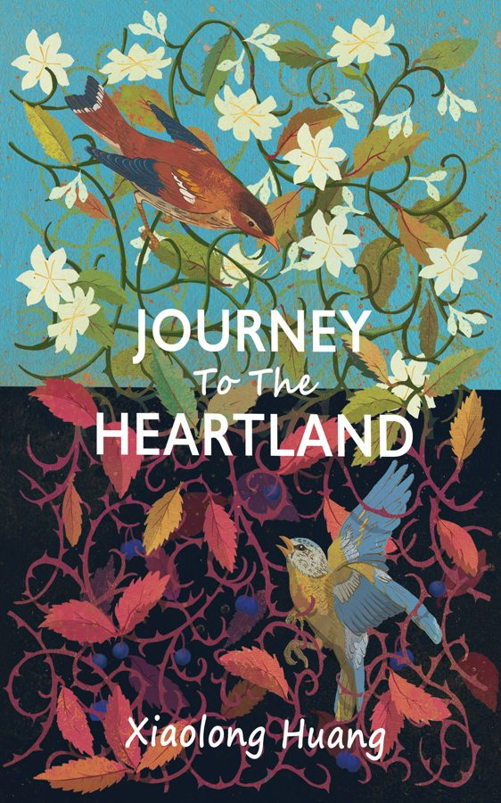

Second Edition · Official website of the author, including the book

“An honest life, fully lived, is itself a political act.”
Fans of The Kite Runner and When Breath Becomes Air will be moved by this courageous memoir — told with the intimacy of fiction — about family secrets, LGBTQ identity, and one man's pursuit of an honest life.
Growing up in 1980s China, Hanwei endures a childhood shaped by his father's hidden life and its long shadow over their family. Sustained by his mother's love and his own fierce drive, he strives toward a life of his own. As he makes his way to America, the people he meets — their struggles, their losses, their stubborn acts of love — shape his pursuit of intellect, love, and humanity, challenging him to live up to what his previous generation could not.
The Second Edition goes deeper into the father's story and introduces Rick, an American man losing ground to addiction and a changing country, whom Hanwei refuses to abandon.
A rare and unflinching story about what it costs to live honestly — and what becomes possible when you finally do.
If you are drawn to stories of cultural identity, family complexity, and social justice, Journey to the Heartland belongs on your shelf.